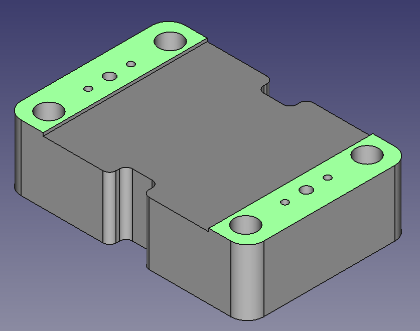
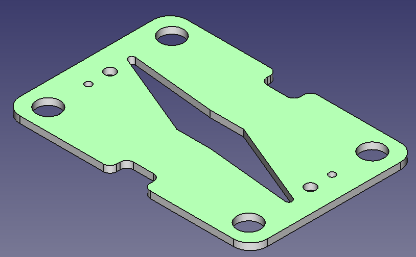
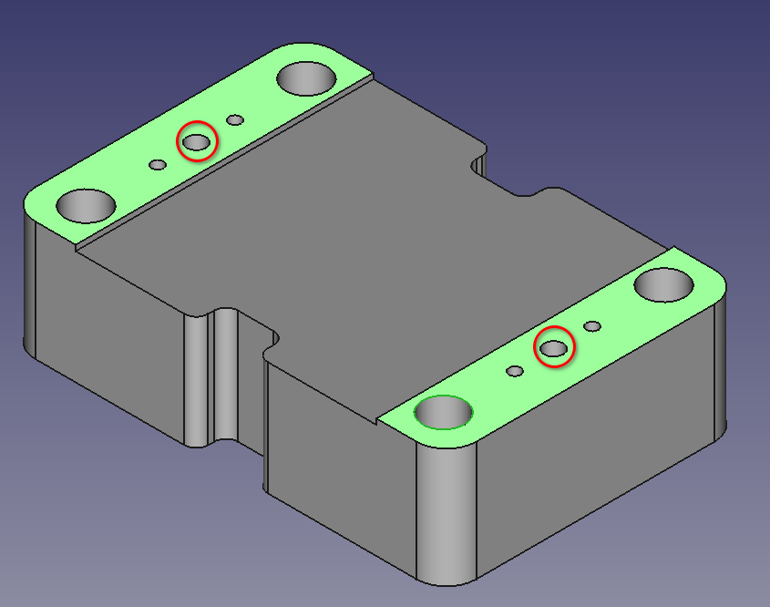

Fabricating cell components

- 3D printing or milling
- Drilling
- Cutting
Bill of Materials
Parts
- 10 cm of 1/8" outside diameter hard plastic tubing - 1/8 inch OD PTFE tubing works well
- 200 g of 3D printing feedstock
- 160 cm² of gasket sheet - Dimensions must be at least enough to cut out approx. four 6 cm x 8 cm rectangles, an A4 sheet is enough
- 100 cm² of grafoil
- 1 meter of silicone tubing
Tools
- 1 1/8" drill bit
- 1 3D printer
- 1 drill - A hand drill or rotary tool (with steady hands) works, but a drill press is preferable
- 1 sheet of sandpaper
- 1 tubing cutter - Anything capable of producing a clean, square cut on plastic tubing withing deforming the tube
- 1 vinyl cutter machine - or laser cutter or hand tools
- 1 vise
Step 1: Print rigid cell components
Using a 3D printer loaded with chemically compatible polypropylen filament/epoxy resin 3D printing feedstock, print one cell body with four barbed fittings, one backing plate and two flow frames (links are to .3mf files).
Prefer conventional machining?
You can also fabricate these parts by milling them from a larger sheet of polypropylene
Step 2: Post-process printed parts
- Remove brim, raft, support material from print (depending on printing method)
- Sand down, with fine-grit sandpaper:
- The sealing faces of each cell body 
- Both faces of each flow frame 
- Secure each cell body and flow frame in a vise and drill out the alignment pin holes to their final diameter with a drill and an 1/8" drill bit

Caution
Depending on the dimensional accuracy of your printed parts, you may need to additionally drill out the electrolyte inlet/outlet holes to the correct diameter with an appropriately sized drill bit (these inlet/outlet holes are located immediately on either side of the alignment pin holes)
This will produce one cell body with four barbed fittings, one backing plate and two flow frames.
Step 3: Cut gaskets
Note:
Cutting the gaskets is most easily done with a vinyl cutter machine, but can also be done manually with a steady hand, utility blade, and appropriately sized punches.
- Using a vinyl cutter machine, download the gasket file (as svg, dxf, or pdf) and cut a sheet of gasket material to make the following four gaskets:
{kind=link}
This will produce one pass-through gasket and three blocking gaskets.
Step 4: Cut alignment pins
Using a tubing cutter, cut two pieces of 1/8" outside diameter hard plastic tubing into 5 cm lengths.
This will produce two alignment pins, which should fit smoothly in to the alignment pin holes in the cell bodies.
Step 5: Cut porous carbon electrodes
TODO
Cut two carbon electrodes into 10 mm x 10 mm square
Step 6: Cut separator membrane
TODO
Cut one piece of separator membrane material into a 20 mm x 20 mm square
Step 7: Cut grafoil sheets
Cut grafoil into two 5 cm by 5 cm squares.
Cut silicone tubing
Cut silicone tubing into 6 15 centimeter pieces.